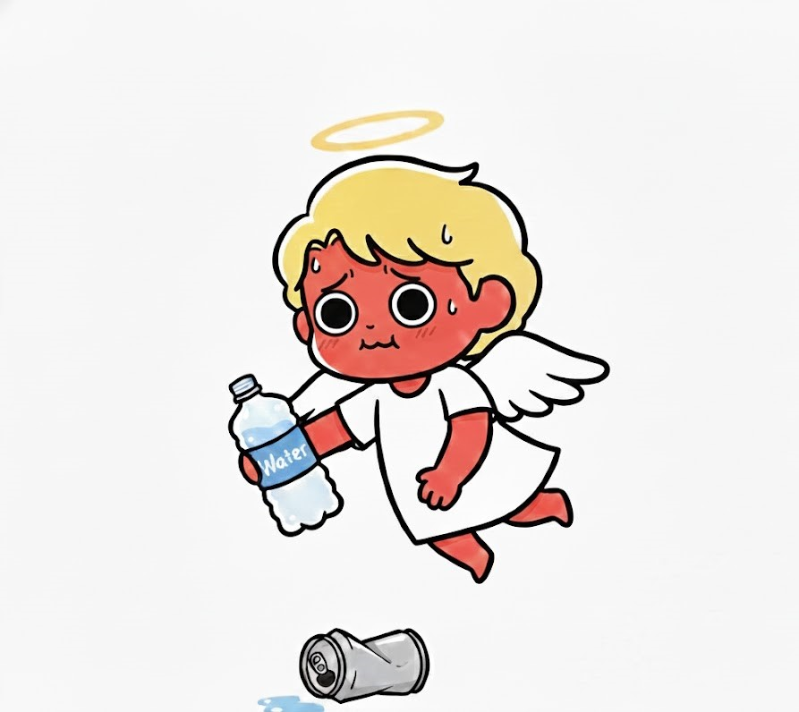

あなたの酒タイプは…

「お酒は弱いが、迷惑はかけない」周囲の空気を読み、潰れる前に静かに帰る。お酒で迷惑をかけない気遣いの塊。
基本的特徴：繊細なホスピタリティの化身
お酒は弱く、体力もありませんが、感受性が非常に豊かです。周囲の表情や声のトーンから空気を敏感に読み取り、誰かが困っていれば、名前も告げずにそっと手を差し伸べる、現代の「名もなきヒーロー」です。他人の喜びを自分の喜びと感じられる、優しい精神の持ち主で、組織の調和を支えています。
飲み会での特徴：静かなる退場劇とアフターケア
盛り上がりのピークが過ぎる頃、誰にも気づかれずにそっと席を立ち、帰宅します。しかし、帰宅途中に「今日はありがとうございました！」といった丁寧なメッセージを送り、サラダの取り分けなどの細やかな気配りを見せるなど、アフターケアの質が異常に高いのが特徴です。あなたの不在で、会に平和があったことを再確認します。
長所と魅力：場のギスギスを消し去る中和剤
あなたがいることで、飲み会から攻撃性が消え、穏やかな空気が流れます。その優しさは、多忙で疲弊したメンバーの心を密かに、かつ深く癒しています。目立たない場所で周囲を支え、精神的な平穏をもたらす、隠れた守護神のような存在です。
【自己主張】
「私はこう思う」という一言を、勇気を持って発信してみてください。周囲はあなたの優しさを知っているからこそ、あなたの本音の意見を、あなたが思う以上に待っています。